Goodnews Wordpress Theme” Documentation by “Momizat” v1.0 for WP3.0+
“Goodnews WordPress Theme”
Created: 14/12/2011
By: Momizat
Email: Contact Form
Thank you for purchasing my theme. If you have any questions that are beyond the scope of this help file, please feel free to use my support forum here. Thanks so much!
Table of Contents
- Basic Installation
- TimThumb Script
- Creating the Navigation Menu
- Creating Categories
- Setup Your Home Page
- Creating Article
- Create A Video
- Create A Slideshow
- Feature Slider
- Custom Widgets
- Footer
- Unlimited Sidebar
- The Logo
- The Layout
- Unlimited Colors
Basic Installation - top
- If you still need to learn how to install WordPress, Click Here Installing WordPress
- Upload the Goodnews Theme, Activate it
- If you will have a problem with uploading the theme using WP's built-in uploader (a common issue with all WP themes), please see this: http://wiki.envato.com/buying/support-buying/solving-broken-theme-issues/
TimThumb Image Resizing Script - Common Problems - top
- !!! READ ONLY IF THE IMAGES YOU PERSONALLY INSERTED INTO THE SLIDER OR YOUR POST ARE NOT SHOWING UP !!!
- TimThumb will automatically create a /cache/ subfolder with proper write-permissions. If your host server doesn’t allow this by default, be sure to manually change the /framework/scripts/timthumb/cache/ folder permissions to 777. If you don't know how to change permissions, google: change permissions + "name of your FTP application"
- If neccessary, make sure the folder which contains TimThumb is also set to 777 as well.
- Please note that on some hostings you need to set 755 instead of 777.
- Please note that if everything above fails, you need to contact your hosting provider to white-list timthumb script
- Please note that this is not theme's issue. So please refer to your hosting providers - if they have a good support, they should know what you want, straight away
Creating the Navigation Menu - top
- Go to Appearance -> Menu For more info please check video tutorial below
To Get The home icon in menu
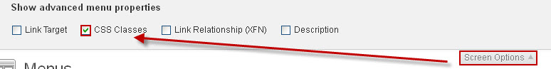
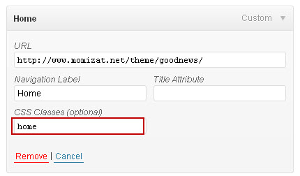
Creating Categories - top
- Follow The Image
Setup Your Home Page - top
- Go to Options -> Home Page Under "News Boxes" Select the count of home page boxes (1 To 10) then select the category of each news box
Creating Article - top
- Go to Posts -> Add New
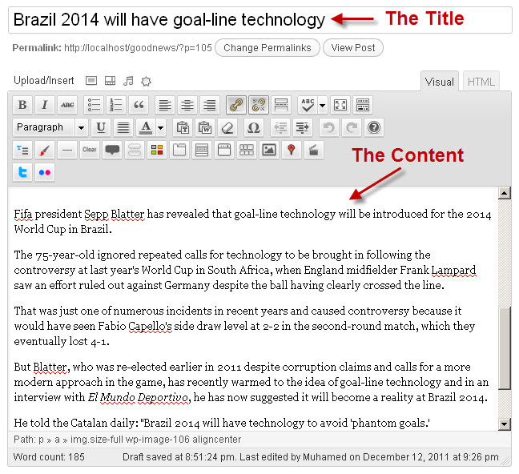
Dont forget the article image If you dont upload the feature image it take the first image in the post(must be uploaded in your media) as a feature image else you will see the default gray image
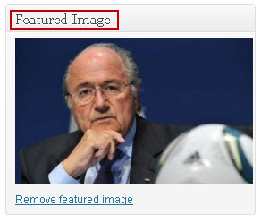
Be sure the type is article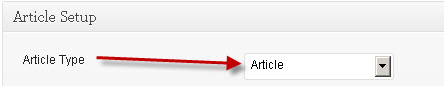
Create A Video - top
- Go to Posts -> Add New Insert The Title and Content
Article Type and Video Type
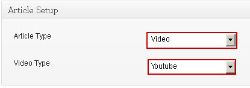
The Available video types is HTML5 , youtube, vimeo, dailymotion
IF HTML5
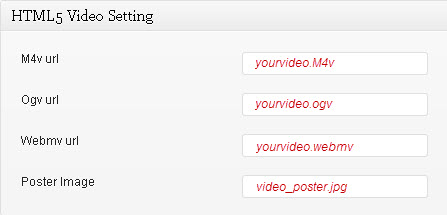
IF Yotube, vimeo, dailymotion
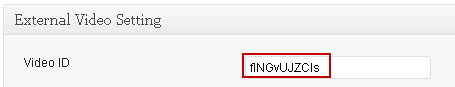
http://www.youtube.com/watch?v=sdUUx5FdySs
http://vimeo.com/12259794
http://www.dailymotion.com/video/x7duax_moom-the-sword-fighter_shortfilms
Create A Slideshow - top
- Go to Posts -> Add New Insert The Title and Content
Article Type
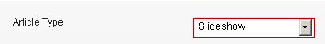
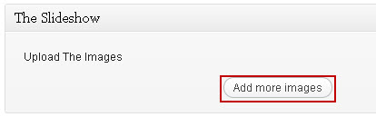
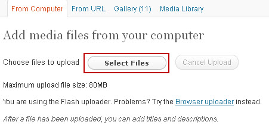
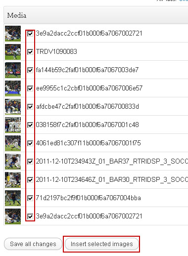
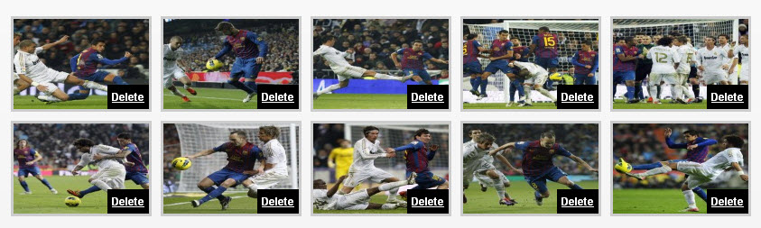
Feature Slider - top
- Go to Options -> Feature Slider You can control in everything , select feature category, and transition effect, speed, timeout, easing and more
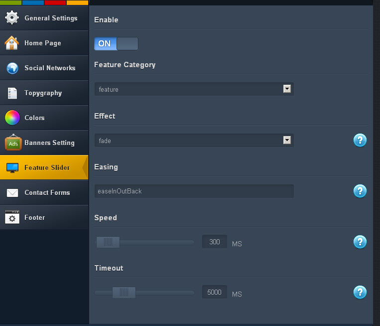
Custom Widgets - top
- Goodnews Come with 9 handy and fully customizable custom widgets
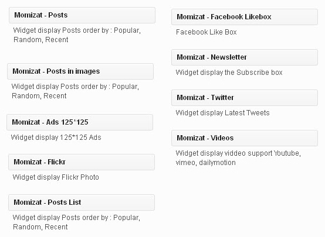
Footer - top
- Customize the footer as you want, select the number of columns, then use widgets
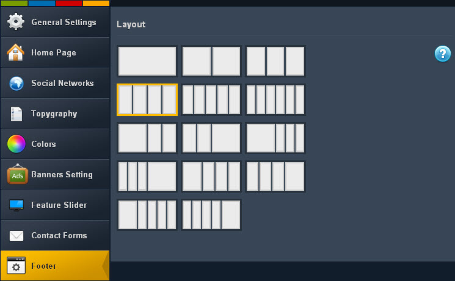
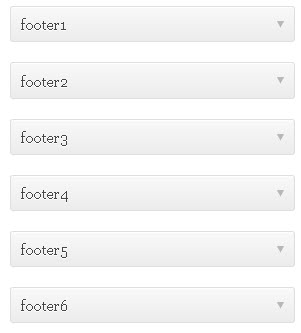
Unlimited Sidebar - top
- You can create custom sidebar for each page or post
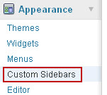
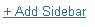
- In Widgets
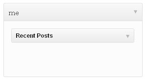
- In Each Page or Post
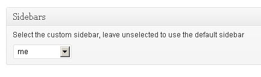
The Logo - top
- Upload Your custom logo into the Option panel
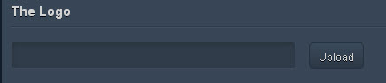
The Layout - top
- Change The Laoyout full or fixed
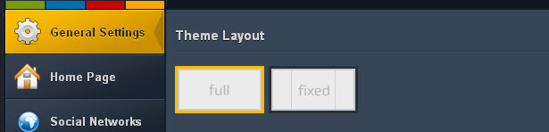
Unlimited Colors - top
- Real unlimited Colors
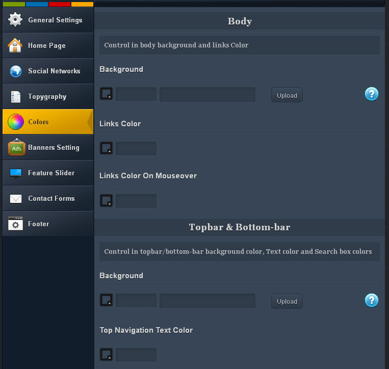
Very Soon